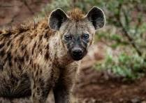

|

|
The HyenasThere are two species of hyenas in Kenya-the striped hyena and the spotted hyena. The spotted hyena/ also called the laughing hyena) is the largest hyena species, with the Striped hyenas are lesser known than their spotted cousins. They are more scavengers The spotted hyena is listed by the IUCN as leats concern, and the striped hyena is near |